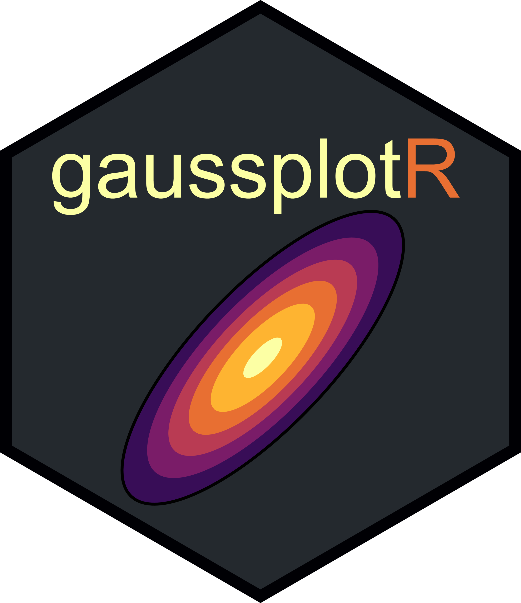
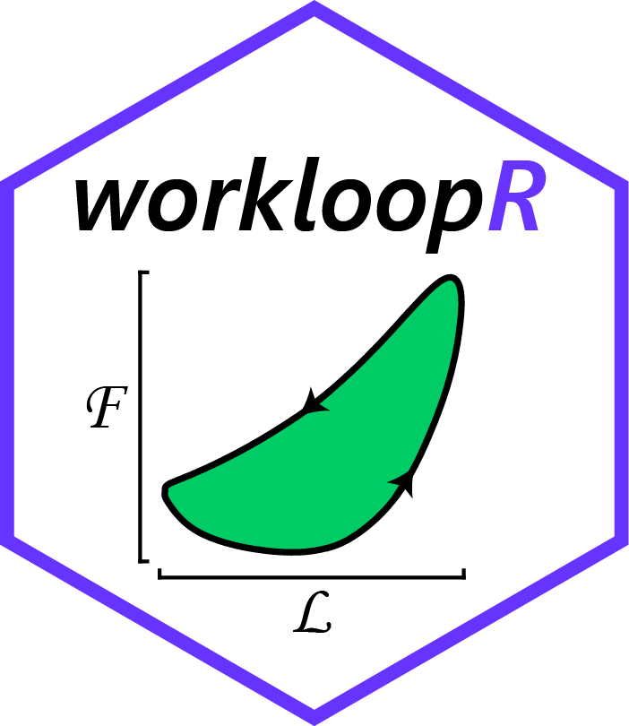

Data, software & code
Many of the links below will take you to content on GitHub (@vbaliga) or Figshare (see my profile here).
Software packages
avinertia: Calculate the inertial properties of a flying bird
avinertia provides tools to compute the center of gravity and moment of inertia tensor of any flying bird. The tools function by modeling a bird as a composite structure of simple geometric objects. This requires detailed morphological measurements of bird specimens although those obtained for the associated paper have been included in the package for use. Written with Christina A. Harvey and Jasmin C.M. Wong.
Accompanying paper (Harvey et al., 2022) in Nature
pathviewr: Tools to import, clean, and visualize animal movement data in R

Part of the rOpenSci project (github: ropensci/pathviewr)
pathviewr offers tools to import, clean, and visualize movement data, particularly from motion capture systems such from Optitrack’s Motive, the Straw Lab’s Flydra, or from other sources. We provide functions to remove artifacts, standardize tunnel position and tunnel axes, select a region of interest, isolate specific trajectories, fill gaps in trajectory data, and calculate 3D and per-axis velocity. For experiments of visual guidance, we also provide functions that use subject position to estimate perception of visual stimuli. Written with Melissa S. Armstrong and Eric R. Press.
gaussplotR: Fit, predict, and plot 2D Gaussians in R

gaussplotR provides functions to fit two-dimensional Gaussian functions, predict values from such functions, and produce plots of predicted data.
Accompanying paper (Baliga, 2021) in the Journal of Open Source Software
workloopR: Analysis of work loops and other data from muscle physiology experiments in R

Part of the rOpenSci project (github: ropensci/workloopR)
workloopR (pronounced “work looper”) provides functions for the import, transformation, and analysis of muscle physiology experiments in R. Over the course of developing the package, we expanded this goal to also cover experiments that are often complementary to the work loop technique. Written with Shree Senthivasan.
Accompanying paper (Baliga and Senthivasan, 2019) in the Journal of Open Source Software
genbank_downloadR: Batch downloading of DNA or protein sequences from GenBank
written as a standalone R script rather than as a full-blown package. Stable releases also available on Figshare.
Data & code from pubs
Many of these repositories contain phylogenies that we’ve inferred, but be sure to see the Phylogenetic trees section below for straightforward access to MCC & ML trees.
figshare repository for: Smyth G, Baliga VB, Gaede AH, Wylie DR, and Altshuler DL. 2022. Specializations in optic flow encodingin the pretectum of hummingbirds and zebra finches. Current Biology.
figshare repository for: Harvey, CA, Baliga VB, Wong JCM, Altshuler DL, and Inman DJ. 2022. Birds can transition between stable and unstable states via wing morphing. Nature. (repository arranged & maintained by Christina Harvey)
figshare repository for: Harvey C, Baliga VB, Goates CD, Hunsaker D, and Inman DJ. 2021. Gull-inspired joint-driven wing morphing allows adaptive longitudinal flight control. Journal of the Royal Society Interface. (repository arranged & maintained by Christina Harvey)
figshare repository for: Leal PBC, Cabral-Seanez M, Baliga VB, Altshuler DL, and Hartl DJ. 2021. Phase transformation-driven artificial muscle mimics the multifunctionality of avian wing muscle. Journal of the Royal Society Interface. (repository arranged & maintained by Pedro Leal)
figshare repository for: Bahlman JW, Baliga VB, and Altshuler DL. 2020. Flight muscle power increases with strain amplitude and decreases with cycle frequency in zebra finches (Taeniopygia guttata). Journal of Experimental Biology.
figshare repository for: Baliga VB, Szabo I, and Altshuler DL. 2019. Range of motion in the avian wing is strongly associated with flight behavior and body mass. Science Advances.
github repository for: Damsgaard C, Baliga VB, Bates E, Burggren W, McKenzie DJ, Taylor E, and Wright PA. 2019. Evolutionary and Cardio-Respiratory Physiology of Air-breathing and Amphibious Fishes. Acta Physiologica. (repository arranged & maintained by Christian Damsgaard)
figshare repository for: Baliga VB and Mehta RS. 2019. Morphology, ecology, and biogeography of independent origins of cleaning behavior around the world. Integrative and Comparative Biology.
figshare repository for: Harvey C, Baliga VB, Lavoie P, and Altshuler DL. 2019. Wing morphing allows gulls to modulate static pitch stability during gliding. Journal of the Royal Society Interface. (repository arranged & maintained by Christina Harvey)
Phylogenetic trees
I am generally happy to share trees from posterior distributions — just shoot me an email
Birds (Aves)
Gobies (Gobiidae)
- 54 species of Western Atlantic gobies + outgroup; from Baliga and Mehta 2019 (Integrative and Comparative Biology):
- Bayesian MCC tree (download)
Marine Angelfishes (Pomacanthidae)
- 72 species of marine angelfishes + outgroup; from Baliga and Mehta 2019 (Integrative and Comparative Biology):
- Bayesian MCC tree (download)
Wrasses & Parrotfishes (Labridae)
- 344 species of wrasses + parrotfishes + outgroup; from Baliga and Law 2016 (Molecular Phylogenetics and Evolution):